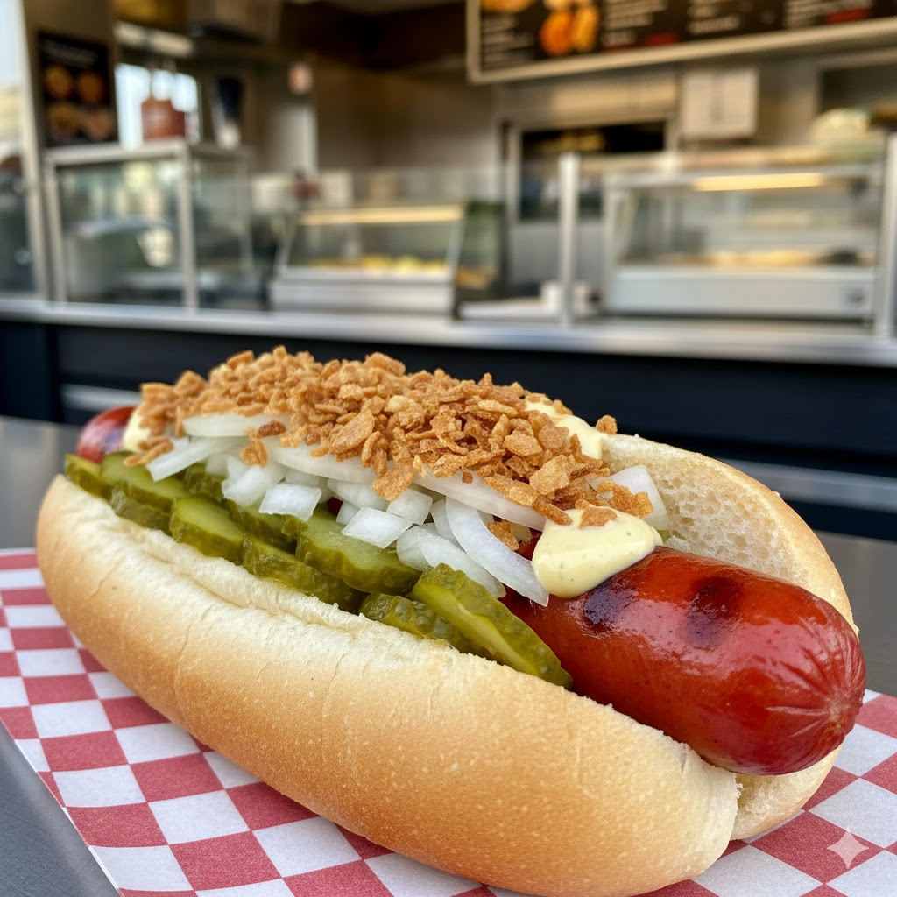

Hotdogs

classic Danish hotdog
With a "red saussage" and cucumber relish on top
Ingredients
- Hotdog buns
- Red saussages
- Mustard
- Ketchup
- Remoulade - A danish dressing consisting of mayo, curry and pickled greens
- Chopped onions
- Fried onions
- Sliced pickled cucumbers
Steps
- Heat the buns.
- Cook the sausages.
- Chop onions.
- Fill in mustard in the bun.
- Add the sausage to the bun.
- On top add Ketchup and "Remoulade".
- add the chopped and fried onions.
- Finish it up by adding the sliced pickled cucumbers.
- Enjoy!
Back